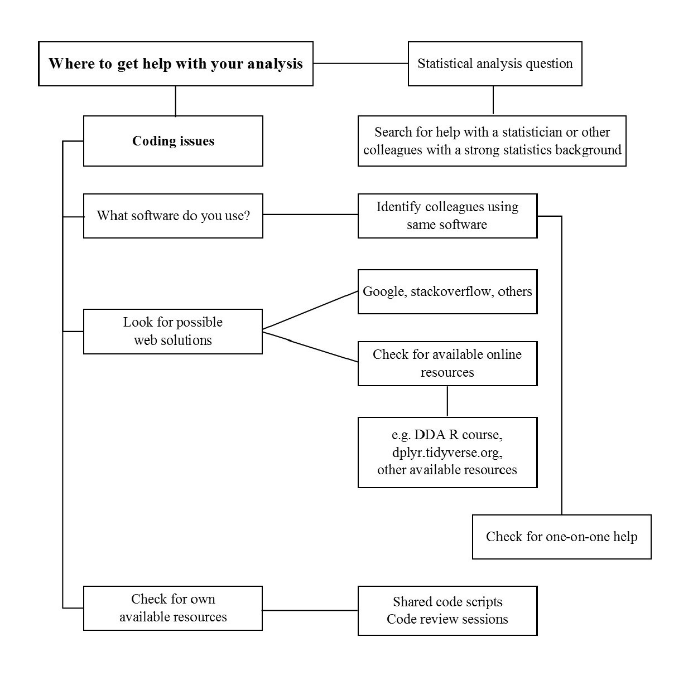

Data analysis tips and help
Material and resources for best practices, learning, and support for doing data analysis.
Warning
🚧 This website and most of its contents are often updated or modified. Many documents are at various stages of completion. 🚧
Some general practices doing data analysis
Data management
- Save the raw data
- Ensure that raw data are backed up in more than one location
- Create the data you wish to see in the world
- Create analysis-friendly data
- Record all the steps used to process data
- Aanticipate the need to use multiple tables, and use iunique identifier for every record
- Submit data to a reptable DOI-issuing repository so that others can acces and cite it
Software
- Place a brief explanatory comment at the start of every program
- Decompose programs into functions
- Be ruthless about eliminating duplication
- Always search for well-maintained software libraries that do what you need
- Test libraries before relying on them
- Give functions and variables meaningful names
- Make dependencies and requirements explicit
- Do not comment and uncomment sections of code to control a program’s behavior
- Provide a simple example or test data set
- Submit code to a reputable DOI-issuing repository
Collaboration
- Create an overview of your project
- Create s shared “to-do” list for the project
- Decide on communication strategies
- Make the license explicit
- Make the project citable
Project organization
- Put each project in its own directory, which is named after the project
- Put text documents associated with the project in the “doc” directory
- Put raw data and metadata in a data directory and files generated during cleanup and analysis in a “result” directory
- Put project source code in the “src” directory
- Put external scripts or compiled programs in the “bin” directory
- Name all files to reflect their content or function
Keeping track of changes
- Back up (almost) everything created by a human being as soon as it is created
- Keep changes small
- Share changes frequently
- Create, maintain, and use a checklist for saving and sharing changes to the project
- Store each project in a folder that is mirrored off the researchers’ working machine
- Add a file called changelog.txt to the project’s “docs” subfolder
- Copy the entire project whenever a significant change has made
- Use a version control system
Manuscripts
- Write manuscripts using online tools with rich formatting, change tracking, and reference management
- Write a manuscript in a plain text format that permits version control

Further reading:
- Wilson G, Bryan J, Cranston K, Kitzes J, Nederbragt L, Teal TK (2017) Good enough practices in scientific computing. PLoS Comput Biol 13(6): e1005510. https://doi.org/10.1371/journal.pcbi.1005510
- Here you can find additional material to reproducible, ethical and collaborative data science: https://the-turing-way.netlify.app/welcome